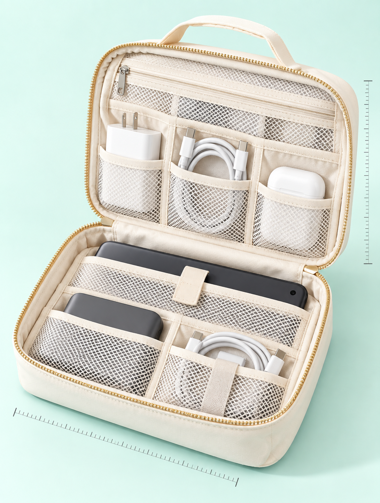
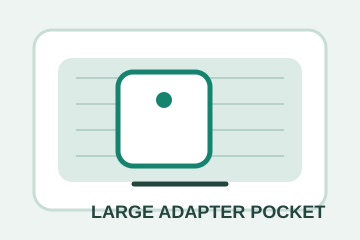
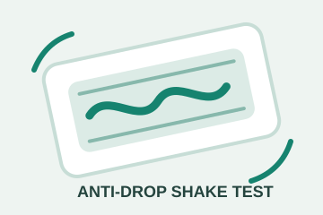
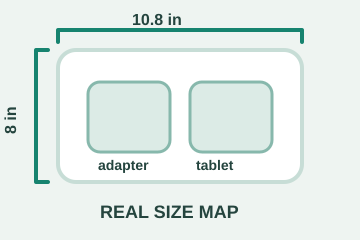

导入产品线索
输入 ASIN、小红书、抖音或 1688 商品线索，先确认需求、供应链和内容热度。
跨境电商 · SIGNAL → EVIDENCE → DECISION
从一个 ASIN、产品图或国内爆款线索出发，AI 汇总评论、搜索词、竞品和利润假设，生成一张老板能拍板的选品机会卡。
小红书 2.8w 收藏 · 1688 可追溯
口袋比图片看起来小，标准手机充电头和 Fire 平板都放不进去。
Amazon Review · US · 1 starHOW IT WORKS
每一步都有证据、判断和下一步动作，现场可以完整跑通。
输入 ASIN、小红书、抖音或 1688 商品线索，先确认需求、供应链和内容热度。
聚合评论、搜索词、竞品价格和成本假设，找出真正影响购买的变量。
业务大脑给出继续、暂缓、放弃或小样验证，并拆成 Listing、内容、供应链任务。
THE WORKBENCH
这是决策台，不是 PPT：你可以改输入、运行分析、退回重算，再确认进入执行队列。
STEP 01 · INPUT
国内爆款信号 · 小红书 2.8w 收藏
自动识别 SellerSprite MCP / 官方 API；字段：星级 / 类型 / 站点 / ASIN / 分页；默认拉取 1-3 星，最多 10 条。
STEP 02 · AI RELAY
聚类评论，识别真实需求和风险。
估算价格带、成本空间和进入壁垒。
给出继续、暂缓或小样验证结论。
检查证据、风险与人工闸门。
STEP 03 · DECISION
跑完后，这里会出现一张可以直接拍板的出海机会卡。
PROOF, NOT PROMISES
“口袋比图片看起来小，标准手机充电头和 Fire 平板都放不进去。”
travel cable organizer waterproof / charger organizer pouch / electronics travel case
“图片看着很能装，但实际适配器和线材会不会掉出来？”
AFTER APPROVAL
这里不只排任务，而是展示供应链询价、竞品审核和 Listing 成稿，让用户看到机会卡已经进入真实验证。
由机会卡自动生成 · 人工确认后启动
先用 1688 锁国内成本底线，再用 Alibaba/Made-in-China 对照外贸报价，最后人工问 3 家供应商确认样品费、MOQ、交期和材料证书。
$9.9 是头部低价带，$19.9 以上必须证明容量和材质。
头部评价壁垒极高，新品应切“大适配器可装”细分。
不建议做“普通数码收纳包”；建议切“真实尺寸 + 大适配器口袋 + 线材防掉落”细分，先用 20 个样品验证差评是否下降。

Hero Image设备装入
适配器
防掉落
尺寸首图解决“图片看着大但装不下”，副图解决“适配器能否放入”和“线材会不会掉”，五点只写可验证承诺。